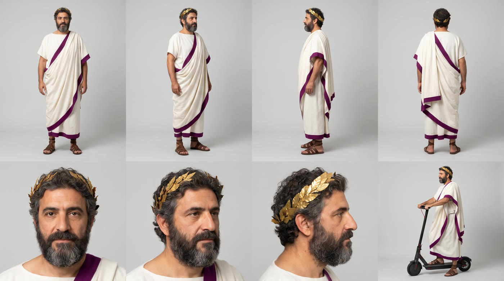
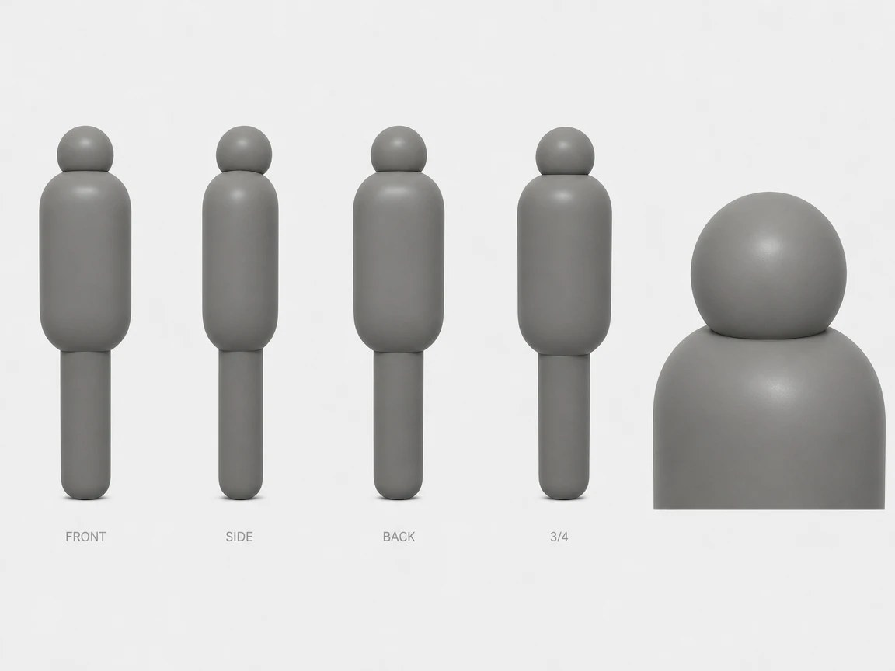
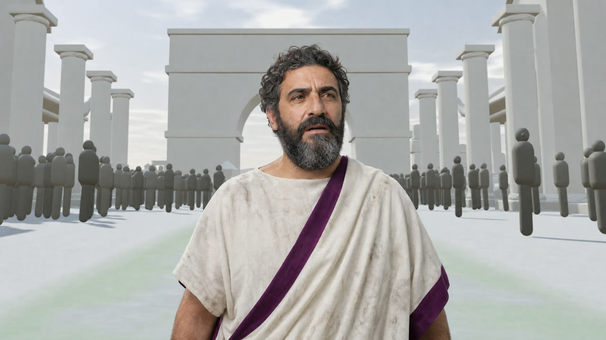
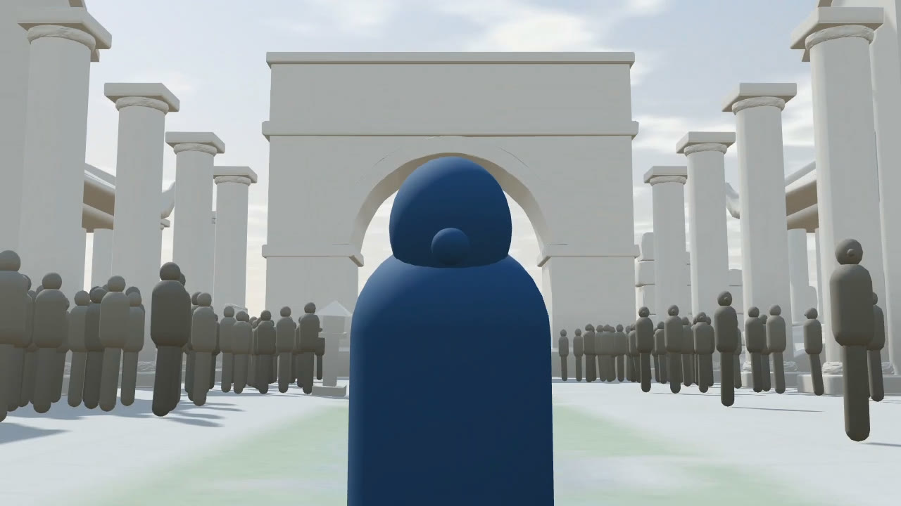

My Roman forum, the 5 steps and every prompt. Open it and remix it.
Open my project and change whatever you want.
The set and the cameras.
Open the world soonDescribe the set to the Agent and it builds it. Ask for stills first.
I want you to rebuild and check a scene from scratch following EXACTLY this description. Do ALL of it before you answer me, check every item yourself against the checklist at the end, fix anything that is wrong, and only then reply to me. Do NOT animate anything. I only need five STILL shot cards, each one a single frozen moment. Everything stays in white-box blockout style: flat untextured light gray volumes, no colors except where I say. SCALE: real world meters. A person is 1.75 m tall. Eye height 1.5 m. WORLD (keep it as it is now, it is good): An ancient Roman Forum. A straight stone road runs down the middle, 12 m wide and 60 m long, flat. At the far end of the road there is a large white-box triumphal arch. Both sides of the road are lined by white-box temples with rows of tall cylinder columns, a broken wall, a few standalone columns, low stone benches and broken column drums. One soft sun light from the upper left, 35 degrees above the horizon, soft long shadows. Clean white-box sky. CROWD (keep the amount it has now, it is good, I like it): About 120 gray mannequins lining both sides of the road, 4 to 5 rows deep, filling the space between the road and the buildings, and some standing on the temple steps. Keep one gladiator mannequin (red) and one friend of his (green) on the right side, taking a selfie together. Many mannequins hold a flat rectangular box (a stone tablet) up in front of their chests or above their heads. In STILLS 1, 2 and 3 the crowd cheers, arms raised, tablets held up, heads turned toward Caesar. In STILLS 4 and 5 the crowd is frozen mid pose and every head is turned toward the road. There must be NO extra mannequin walking beside the camera and NO gold or orange mannequin. The only colored figures are Caesar (blue), the gladiator (red) and his friend (green). CAESAR: one blue mannequin, the hero, kept as a separate object. A man shape wearing a toga with a stripe and a laurel wreath ring on his head (the wreath is a separate small object). He rides a low resolution electric kick scooter: handlebar, stem, deck, two small wheels, flat light gray, chunky polygons, with a small cylinder light on the stem. Caesar and the scooter are two separate objects but in the stills where he rides, the scooter is exactly under his feet with both feet on the deck and the wheels touching the ground. Never leave the scooter next to him or behind him while he rides. THE FIVE STILL SHOT CARDS (create 5 separate shot cards, each with its own camera, named "Still 1 Ride", "Still 2 Crash", "Still 3 Impact", "Still 4 Wake up", "Still 5 Drone"): STILL 1, "Ride": camera ON the road, 4.5 m in front of Caesar, 1.5 m high, 35 mm equivalent lens, level horizon, aimed at him, facing him. Caesar is on the road center, riding toward the camera, standing upright on the scooter deck with both feet on it, his left hand on the handlebar, his right arm raised at shoulder height in a slow royal wave. The scooter is under his feet, wheels on the ground. The crowd cheers on both sides. The arch is visible far behind him. Caesar's front must face the camera. STILL 2, "Crash": same camera as Still 1 (on the road, 1.5 m high, 35 mm, facing the same direction). The scooter has just stopped dead on the ground with its front wheel locked. Caesar is in the air, thrown forward over the handlebar in a low arc, 3 m from the camera, flying straight toward the camera, arms stretched out in front of him, body almost horizontal, his laurel wreath flying off his head behind him. The crowd freezes with open arms. Caesar's front faces the camera. STILL 3, "Impact": camera at ground level, 0.4 m high, 85 mm equivalent lens. Caesar lies on his back on the road, his head 0.6 m from the lens and his face filling most of the frame, his body going away from the camera. The scooter lies on its side on the road 4 m behind him. The wreath lies on the ground 1 m to the left of his head. The gray world is visible behind him, blurred. STILL 4, "Wake up": camera at 1.5 m height, 3 m in front of Caesar, 35 mm equivalent, facing him. Caesar stands on the road FACING THE CAMERA (his front toward us), arms slightly open, head turned a little to the left as if he is looking around, the frozen crowd lining both sides of the road behind and around him, the scooter lying on its side on the ground 3 m behind him. The arch is behind him in the distance. STILL 5, "Drone": camera at 120 m height, tilted down 60 degrees, a very wide view. We see the whole length of the road, the white-box buildings and temples on both sides, the arch at the far end and the frozen crowd lining the road as tiny gray dots. Caesar, the only blue figure, stands alone on the road in the lower third of the frame, small but still clearly visible. CHECKLIST, verify before replying and fix anything that fails: 1. There are exactly 5 still shot cards with those names, no animation, no old animated clips used. 2. The crowd is about 120 mannequins and is the same density as now. No extra mannequin next to the camera, no gold figure. 3. In Still 1 Caesar is standing ON the scooter deck, scooter under his feet, wheels on the ground, right arm raised, facing the camera. 4. In Still 2 Caesar is in the air flying toward the camera, the scooter on the ground behind him, the wreath flying. 5. In Still 3 the camera is on the ground and his face is close to the lens. 6. In Still 4 Caesar faces the camera, standing, the crowd is frozen and facing the road. 7. In Still 5 the camera is at 120 m, very wide, Caesar is small in the lower third and still visible. 8. Everything is white-box except Caesar (blue), the gladiator (red) and his friend (green). When everything is finished and verified, reply with a short list of what you did and anything that you could not do exactly as described.
Place the camera and set a few keyframes. That's your drone shot.
Keep the 5 still shot cards exactly as they are. Now I need ONE new animated shot card, called "Shot 2 Wake up v2", 9 seconds long, one continuous camera, no cuts. It starts exactly at the pose and camera of STILL 3 and ends exactly at the pose and camera of STILL 5. The world and the crowd are the same as in the stills: the crowd is frozen mid pose and facing the road, nothing moves except Caesar and the camera. The scooter lies on its side and does not move. There is NO scooter animation in this shot. CAESAR'S ANIMATION: 0.0 to 1.8 s: Caesar lies on his back on the road, head 0.6 m from the camera, completely still, only a slow breathing movement. 1.8 to 3.0 s: he turns his head slightly and opens his eyes (a small head movement is enough, the face has no details). 3.0 to 5.0 s: he props himself up on one elbow and sits up. 5.0 to 6.5 s: he stands up and turns around so that his FRONT faces the camera, standing at the pose of STILL 4, arms slightly open, head turning a little left and right. 6.5 to 9.0 s: he stays standing still in that pose. CAMERA ANIMATION, use only 3 keyframes and smooth interpolation (ease in and ease out), no jitter, no step movement, no sudden changes of direction, the movement must look fluid like a real dolly and a real crane: Keyframe 0 (0.0 s): the camera of STILL 3, ground level 0.4 m high, 85 mm, 0.6 m from Caesar's face. Keyframe 1 (5.0 s): the camera of STILL 4, 1.5 m high, 3 m from Caesar, 35 mm. From 0 to 5 s the camera moves backward along the road in one smooth dolly out, and rises smoothly from 0.4 m to 1.5 m, while the lens opens smoothly from 85 mm to 35 mm. Keyframe 2 (9.0 s): the camera of STILL 5, 120 m high, tilted 60 degrees down. From 5 to 9 s the camera moves backward and straight up in one smooth crane, tilting down gradually from level to 60 degrees. Keep Caesar in the frame all the time, ending in the lower third of the frame. Please check that the camera really moves smoothly through the 3 keyframes, that Caesar's animation happens at the times above and that nothing else in the world moves. Then tell me when it is ready.
One sheet for your character, one for the mannequins. Faces stay the same.


Image 1 is a frame from a 3D blockout set. Use it ONLY as the reference for the shape, proportions, colour and material of the GREY crowd mannequins. Ignore the blue mannequin in the centre, ignore the set, the columns and the floor. Character reference sheet of that grey crowd mannequin, exactly as it looks in Image 1: a matte, smooth, uniform medium grey (#7A7A78) 3D dummy, about 1.75 m tall, with no face, no eyes, no hair, no clothes, no hands and no arms. A small round head sitting on a short neck, a rounded capsule shaped torso with soft rounded shoulders, and a single thick rounded cylinder for the legs, slightly narrower than the torso. Same proportions as in Image 1. All edges soft and rounded, simple low poly shapes with smooth shading. The surface is slightly satin, catching a soft highlight on the top of the head and the shoulders. Clean light grey studio background, even soft light, no shadows on the background. Layout, all at the same scale and aligned on one floor line: front view, left side view, back view, three quarter view, and a close up of the head and shoulders on the right. Small grey labels under each view: FRONT, SIDE, BACK, 3/4. The mannequin is grey in every view, never blue. Identical shape and colour in every view. No textures, no seams, no logos, no text other than the labels. 16:9.
Swap the dummy for your character. Everything else stays in place.


Image 1 is the exact scene to keep. Image 2 is the character. Recreate Image 1 exactly: the same camera position, lens, framing and perspective, the same white-box 3D blockout set (flat untextured light grey columns and walls, pale grey floor with a faint green tint in the middle), the same soft studio light coming from the back left, and every grey mannequin in exactly the same place with its soft shadow on the floor. Change only one thing: replace the blue mannequin in the centre with the man from Image 2, a photorealistic Julius Caesar. Same face, grey curly hair, grey beard, white wool toga with a wide purple sash over the left shoulder, brown leather sandals. He stands exactly where the blue mannequin stands, at the same scale (his head at the same height as the blue mannequin's head), seen from behind in a slight three quarter view, turning his head a little to the right to look at the grey mannequins around him, his arms relaxed, a little puzzled. He is the only realistic element in the image: real skin, real cloth folds, real hair. He casts a soft shadow on the floor in the same direction as the mannequins' shadows, and the light on him matches the scene: soft, even, slightly cool, from the back left. Keep the blockout look untouched: no textures, no colour on the set, no faces on the mannequins, no extra people. 16:9, no text, no watermark.
Edit Image 1. Keep everything exactly the same: camera position, framing, lens, light, the white-box set, Caesar's face, wreath, toga, sash and sandals, and every mannequin in the background. Change only this: one grey mannequin from Image 2 now stands right in front of Caesar, very close, about 40 cm from him, slightly to the right of the frame centre, facing him, at the same scale as the other mannequins. Caesar has turned toward it in a three quarter back view and is touching the side of its round blank head with the fingertips of his right hand, carefully, as if checking what it is. His head is tilted slightly, puzzled. His left arm hangs relaxed. The new mannequin is identical to the others: matte grey, no face, no arms, capsule torso, single rounded cylinder for the legs, with a soft shadow on the floor in the same direction as the other shadows. No text, no watermark. 4:3.
Real image as the start frame plus both sheets. 5 s, 4:3.
IMAGE REFERENCE MAP Image 1 (start frame) → the exact set, camera position, Caesar and the mannequin he is touching in the first frame. Frame 0 is already mid action: the fingertips of his right hand are already on the side of the mannequin's head. Image 2 (character sheet) → Caesar: same face, grey curly hair, grey beard, gold laurel wreath, white toga with a wide purple border, brown sandals. Identical for the whole clip. Image 3 (character sheet) → every mannequin: smooth matte grey dummy with a small round head, no face, no arms, a capsule torso and a single rounded cylinder for the legs. They never grow arms, faces or legs. The set stays 100% white-box blockout for the whole clip: flat grey and white volumes, no textures. Only Caesar is photorealistic. Super realistic, like real footage filmed by a real person standing in a real 3D previs set. Caesar never looks at the camera. SHOT: one continuous handheld take, 0.0s to 5.0s, real time, no slow motion, no cuts. CAMERA: a real camera operator filming by hand, standing behind and slightly to the left of Caesar at chest height, about 2.5 m away, 35mm. Handheld baseline for the whole clip: constant small jitter, slow breathing sway, the horizon drifting 1 to 2 degrees, framing always slightly late. The camera never freezes, not even when Caesar stands still. Depth of field: sharp from Caesar's hand to the mannequin's head, the far mannequins melt into soft grey shapes and the columns at the back are softer still. The only in-lens events in this clip are the two focus breaths of the stepped zoom and one autofocus hunt at 2.4s. No flares, no exposure changes, no other focus changes. LIGHT: one soft constant studio light from the back left, high and wide, on continuously from the first frame to the last, never changing. It reaches the top of Caesar's head and wreath (the gold leaves catch a small soft glint), the left side of his face and the wool of his toga, and the rounded tops and left sides of every mannequin. Whatever it does not reach (his right cheek, the folds under his arms, the right sides of the mannequins) stays a soft cool grey. Soft contact shadows on the pale grey floor, all pointing toward the front right. Two small catchlights in Caesar's eyes from that light, moving as he turns his head. A natural sheen on his forehead and nose where the light hits. 0.0s to 0.9s. Caesar runs the fingertips of his right hand down the side of the mannequin's blank head and taps its shoulder twice, frowning, not understanding what it is. His left hand hangs relaxed at his side, the fingers twitching once. Effect: stepped zoom in. The operator zooms toward his hand and the mannequin's head in two small uneven steps, overshoots a little and pulls back, the focus goes soft for a moment after each step and snaps back on his hand. 0.9s to 1.9s. Caesar knocks lightly on the mannequin's chest with the knuckles of his right hand and leans in to look at its face, head tilted, his left hand coming up to rest on his own chest. Effect: the camera moves. The operator walks quickly around to the right, about 60 degrees, to a three quarter front angle where we see Caesar's face; the frame bobs with each step, short real motion blur during the move, and it settles a beat late, slightly crooked. 1.9s to 3.6s. The other mannequins slowly start to come closer, as if curious. They glide forward upright and calmly, without walking, each one at its own pace, their round heads turning a little toward Caesar. Caesar notices them over his shoulder, his right hand slowly leaves the mannequin, he takes half a step back and looks from one to another, his left hand still on his chest. Effect: the operator pans late to follow his look, the framing lags and drifts; at about 2.4s the autofocus hunts once between Caesar and the nearest mannequins and locks on Caesar. 3.6s to 5.0s. The mannequins stop close around him, a little too close. Caesar shrinks slightly, shoulders up, eyes moving quickly between them, uneasy and overwhelmed, his right hand raised a little in front of his chest, palm out, his left hand still on his chest. Effect: the operator takes one small step back to fit everyone in, a slow breathing sway, no settle, not even on the last frame. PERFORMANCE: natural, believable body language, small movements, never cartoonish. No jumping, no shouting, no big arm gestures. His toga moves naturally with every step and turn. LOOK: clean 3D previs set (flat grey and white volumes, soft contact shadows on a pale grey floor) with a fully photorealistic Caesar: visible skin pores, fine texture, real cloth weave and folds, natural motion. Neutral true to life colours, no colour grade, no teal and orange, no orange tint, no cinematic LUT, no beauty smoothing, slight lens softness toward the edges. Audio: soft footsteps on a hard floor, a light tap and a hollow knock on the mannequin, a faint smooth sliding sound as the mannequins come closer, quiet room tone. No music, no dialogue. Avoid: textures or colour on the set, mannequins with faces, arms or walking legs, mannequins touching or attacking him, Caesar changing face or costume, Caesar looking at the camera, exaggerated reactions, slow motion, cuts, a gimbal or drone smooth camera, the camera freezing, light changing or flickering, text, logos, watermarks.
Stills first, animation later.
Character sheet before anything else.
Low quality test, then the final render.